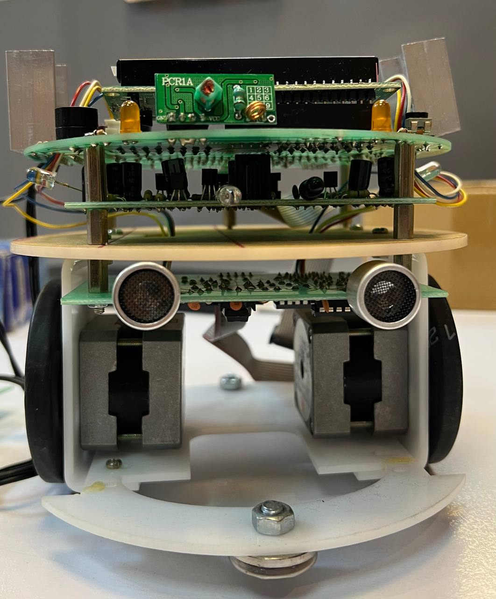

Academic Experiences
Education
Master of Science in Electrical Engineering - Micro and Nano Electronic Devices
Sharif University of Technology, Tehran, Iran (2016-2019)
GPA: 17.43/20 (3.74/4.0)
Thesis: Design and Implementation of a smart system for tele-communication holes protection
Supervisor: Dr. Aminghasem Safarian
Bachelor of Science in Electrical Engineering - Electronics
Sharif University of Technology, Tehran, Iran (2011-2016)
GPA: 14.90/20 (2.85/4.0)
Final Project Topic: Design and implementation of a 900 MHz Voltage-Controlled Oscillator (VCO) circuit
Supervisor: Dr. Ali Medi
Academic Works
Teaching Assistant, Sep 2017 – Jun 2018
Sharif University of Technology, Tehran, Iran
Course: Electronic Principles and Lab
Professor: Dr. Aminghasem Safarian
- Conducted weekly exercise classes and laboratory sessions for approximately 30 undergraduate students.
- Prepared and graded assessments, providing timely feedback to students.
- Administered the final exam, including supervision, grading, and compiling results.
Laboratory Assistant, Sep 2016 – Jun 2018
Sharif University of Technology, Tehran, Iran
Lab: RFIC Lab
Professor: Dr. Aminghasem Safarian
- Provided support with administrative tasks.
- Managed laboratory equipment and student entry/exit.
Academic Projects & Presentations
- Participated in the ISSCC weekly journal club and presented three sessions, 2018.
- Presented one session in the ISSCC weekly journal club, 2017.
- DNA sequencing by reading current and voltage changes of a biased graphene, Jul 2016.
- Developed a discrete 400 KHz band-pass filter, Apr 2015.
- Designed and implemented an auto-navigated robot, Spring 2014.

Computer Architecture, EE Department, Sharif University of Technology, Spring 2014.
Selected Courses
MSc
- Medical Ultrasound: 17.3/20
- RF Integrated Circuits: 16.7/20
- Optoelectronics: 20/20
- Semiconductor Technology: 17.8/20
BSc
- Microprocessor System Design: 16/20
- Biomedical Engineering Fundamentals: 16.9/20
- Physics 2: 17/20
- Engineering Math: 16.6/20
Conference & Seminar Participation
- “An introduction to Cloud CCTV Webinar”, New York, USA, Oct 2021
- Key Video Surveillance Trends for 2021 Webinar, New York, USA, Jan 2021
Lab Skills
- Microscopy techniques: light, fluorescent, TEM, SEM, AFM
- Oscilloscope and spectrum analyzer
- Function generator, power supply, and multimeter
Honors & Awards
- Ranked in the top 0.02% in the National Entrance Exam for Iranian Universities, Jul 2011
- Awarded the "Financial Educational Reward" by Iran's National Elites Foundation, Jul 2011
- Secured scholarships for bachelor’s and master’s based on academic excellence.
Test Scores
- GRE: Not yet taken
- IELTS: Not yet taken
References
Dr. Aminghasem Safarian
Associate Professor
Department of Electrical Engineering, Sharif University of Technology
Email: safarian@sharif.edu
Dr. Reza Sarvari
Associate Professor
Department of Electrical Engineering, Sharif University of Technology
Email: sarvari@sharif.edu
Dr. Bijan Vosoghi Vahdat
Associate Professor
Department of Electrical Engineering, Sharif University of Technology
Email: vahdat@sharif.edu
Dr. Khosrow Hajsadeghi
Associate Professor
Department of Electrical Engineering, Sharif University of Technology
Email: ksadeghi@sharif.edu